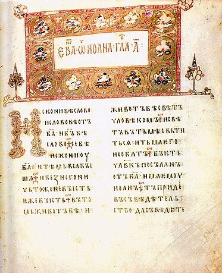
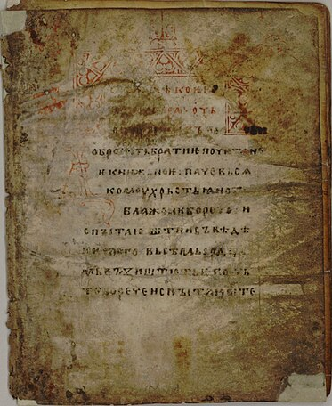
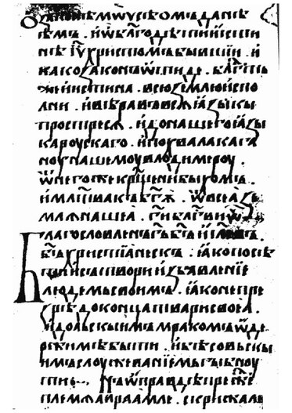
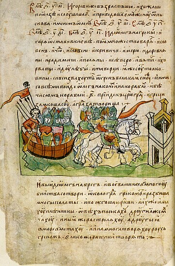

Ukrainian literature has a thousand-year history. Its beginnings belong to the times the formation of Kyivan Rus. However, even in prehistoric times (before the 9th century) ancestors Ukrainians had developed oral creativity.
Literature of Russ
Ancient Ukrainian literature and medieval Ukrainian literature The oldest books of manuscripts were created on Ukrainian lands and reached We, starting our calculations from the middle of the 10th century. With the introduction Christianity in Kievan Rus (988) Development of trade, crafts, foreign policy and culture that led to the development of writing
Flowering of the Kiev state in the X-XI centuries. This is connected with the names of princes Vladimir the Great and Yaroslav the Wise. To strengthen Christianity and spread Greco-Baizantine culture, Vladimir the Great founded a school for children from the highest sections of society. One of the first chronicles says that the mother of the children cried because they did not yet understand how important education is for a person. Since then, not only in Kyiv, but also in most cities, schools have been open. Yaroslav the sage, who became famous for his love Books, in the Hagia Sophia, opened the first library, which was later Lost and not found at this time.
There are scientific versions about the emergence of writing in pre-Christian times period, however, we will take into account only the written records that have reached us. After all exactly these books are indisputable documents that have come down to us. After all, these books - indisputable documents on the basis of which certain statements can be made. To them belong to: Ostromyrov Evangeliye, Izbornyk Svyatoslav (1073), Izbornyk (1076) and others.
The first significant written a monument of Kyivan Rus' is the annals "The Tale of Bygone Years", which is not only a source of historical information, but also a textbook of epic songs, legends and tales of the era of Kyivan Rus. A poetic masterpiece of ancient literature is "A word about Igor's regiment". This heroic epic absorbed the best examples of folk creativity of that time and became the property and pride of all Slavic the world
The book culture of Kyivan Rus developed at a fairly high level. Monasteries were centers of ideological life. Here were the lives of the saints, chronicles were written. In the monasteries there were scriptoriums, where copies were made books for princely and boyar families.
The first library in Russia was organized with the assistance of Yaroslav the Wise (1037). For the son of Yaroslav the Wise Svyatoslav was made one of of the first Russian books that have survived to our time - "The Collection of Svyatoslav", which contains a "list of false and true books" under the title "Theology from words".
He worked well at the Sophia Cathedral from the first half of the 11th century equipped, provided with a large library of books (950 volumes), as well as qualified scribes and artists, the Grand Duke Scriptorium, from which the most valuable monuments of ancient Russian writing came out.
Books in this historical period were made of parchment (calf skin) and ago they were very expensive, because it was possible to buy a large one for one book house. Therefore, the Kyiv Russian elite, in order to perpetuate their memory, gave ("donated") books to Orthodox monasteries. Lists of such "donated" books became a model of Kyiv-Russian bibliography.
Ancient Ukrainian literature
Ostromyrove Evangelie: The author is Dyak Hryhoriy
The oldest dated handwritten monument of the Church Slavonic language of
Kyiv
state
This work was transcribed in 1056-1057 from the Bulgarian original by
Grigory for the Novgorod official Ostromir, on whose behalf
Gospel
got a name The Ostromyov Gospel contains selected Gospel readings.
Although this work is written
in the Old Slavic language, but there are interspersions of the living
language of Russia-Ukraine in it. Manuscript of the monument,
which has 294 sheets of large format, artistically decorated
colored initials, screensavers, three miniatures of John the Evangelists,
Luke and Mark.
Izbornyk Svyatoslav (1073) Author: Diak Ivan.
The second dated Old Russian script a landmark is the collection of Svyatoslav (1073). This is an archaic handwritten textbook containing various sayings and fragments from theological works. The book has an encyclopedic content, it deals with the problems of Christian theology, the provisions of the Bible about behavior in everyday life are explained.Here given information on astronomy and astrology, mathematics and physics, history, philosophy, grammar, zoology, botany, logic and ethics. Elector transcribed by Dyak Ivan with other scribes for Prince Svyatoslav of Kyiv Yaroslavich from Bulgarian source compiled at the beginning of the 10th century. for the Bulgarian king Simeon Svyatoslav's anthology contains 380 articles belonging to 25 authors (mostly to the Byzantines).
Elector (1076). Author: Dyak Ivan
The third dated written note — Izbornyk (1076) — compiled from the materials of the manuscripts of the princely library of St. Sophia Cathedral. This one the book contains a wide variety of spiritual and philosophical information content — reflections on the true faith, teaching children, etc.
A word about law and grace. Author: Hilarion of Kyiv
Affirms independence of the Russian state and church, denies Byzantium's authority over Kyiv. "Word" emphasizes the opposite of "the law" (of the ancient Jewish religion) and "grace" (new — Christian). "Law" is cold, darkness and slavery, and "grace" — warmth, enlightenment and freedom.Yes, once "our land" was empty and dried up, until "from end to end" it was watered by the Gospel spring. The baptism of Kyiv is the result of God's care for Russia, it revealed that Russia not is worse than other (Byzantium) countries. The author of "Slova" is not only a representative of the political orientations of contemporary Russia, but and a talented writer-orator who gave the work a harmonious composition, splendor of stylistic design and rhythmic expression. "Word" was intended for "selected" listeners. This did not prevent popularity "Words", that it was often copied and used, for example, in praise Volodymyr Vasylkovych, in the Volyn Chronicle. He used it in the second half XIII Art. Serbian writer, monk Domentian, writing about Simeon, Sava Serbskyi and Nikita Serhiyovych.
The 14th page of the Radzyvill Chronicle (the original has not been preserved) of the story time years. Author: Nestor Lytopysets
The first chronicle that reached us, it is also called the "Initial Chronicle". It is he who tells the story of our people from the most ancient times to the days of Nestor the Chronicler ― the compiler of this work. It is established that the chronicle has several authors, but Nestor arranged it, completed it artistically, continuing the story until 1113. It is not only a kind of history textbook, but also a treasury of poetic and epic works legends, fables, stories.The narrative in the annals is sometimes calm, then dramatic tone, which is sometimes interrupted by extremely emotional ones in bursts The language of the work is lively, figurative, poetic, although heterogeneous: the texts contain and Old Slavonicisms, and folk-colloquial elements. The original has not survived to our time has been preserved, there are only late lists, i.e. variants copied from other sources. The oldest of them is Lavrentiivskyi, rewritten in 1377, which covers events until 1110, and Ipatiivskyi (Ipatskyi), rewritten at the beginning of the 15th century century bringing the story to 1117.
New Ukrainian literature
At the end of the 18th century, a burlesque-travesty poem by Ivan Kotlyarevsky "Aeneid" marked the emergence of the newest literary Ukrainian language and beginning of modern Ukrainian literature. This work has absorbed pearls Ukrainian humor, reflected the vivid folk life. Humorous and satirical tone of Kotlyarevsky's works was picked up by other writers, first of all members the so-called Kharkiv circle (P. Hulak-Artemovskyi, E. Hrebinka). To G. Kvitka-Osnovyanenko, the founder, also belonged to the Kharkiv circle of Ukrainian fiction, which interrupted the tradition of use Ukrainian language only in comic genres.
Ukrainian literature in Trans-Ugrian and Sub-Polish Ukraine
Wikipedia is still being edited here.
Ukrainian literature in Sub-Russian Ukraine.
The period of the Russian Empire.
Despite Despite the colonial policy of the Russian imperial government, oppression and prohibitions of Ukrainian culture Despite (1863 — Valuev circular, 1876 — Emsk decree), Ukrainian literature developed and reached significant heights successes In 1798, the poem "Aeneid" by Ivan Kotlyarevsky was published - it was from her Ukrainian literature and language began. Kotlyarevsky also wrote plays in the Ukrainian language "Natalka-Poltavka" and "Moskal-charivnyk". At the beginning of the 19th century, Ukrainian literature was actively developing. IN poetry then romanticism reigned. Great contribution to the development of Ukrainian literature contributed by the poets of the so-called "Kharkiv School of Romantics" — P. Gulak-Artemovskyi, M. Petrenko, V. Zabila and others. The first prose works written in Ukrainian by Hryhoriy Kvitka-Osnovyanenko ("Marusya", "Konotopsk Witch", "Saldatsky Patret"). Taras Hryhorovych was the most prominent Ukrainian writer of the 19th century Shevchenko is a poet, artist, author of prose and dramatic works. In 1840 year his poetry collection "Kobzar" was published. Panteleimon made a significant contribution to the development of Ukrainian literature Kulish, Marko Vovchok, Ivan Nechuy-Levytskyi, Borys Grinchenko, Mykhailo Kotsyubynskyi, Lesya Ukrainka, Volodymyr Vynnychenko, Spyridon Cherkasenko, Arkhip Teslenko.
The period of the USSR.
After the revolution, the literary process was marked by special drama and difficulty in Ukraine, as well as throughout the USSR. On the one hand, Ukrainian literature at that time was experiencing unprecedented prosperity. On a rich literary palette various art schools, styles and trends coexisted — from radical proletkultism, theoreticians of which promoted the creation of "laboratory by way" of "purely proletarian culture" (V. Blakytny, H. Mykhailychenko, M. Khvylovy) to futurism (M. Semenko) and even neoclassicism, representatives which focused on the creation of high harmonic art based on mastering classic examples of world literature (a group of neoclassicists headed by with M. Zerov). In 1925-1928, a "literary discussion" took place - a public discussion ways of development, ideological and aesthetic orientation and tasks of the new Ukrainian Soviet literature, the place and role of the writer in society. Discussion arose due to deep differences in the understanding of the nature and purpose of art creativity among Ukrainian writers, ideological and political competition literary organizations. However, most of the representatives of this wave of Ukrainian revival died in the times of the Civil War, the 1932-1933 famine, and the Bolshevik era repressions of the 1930s. In 1938-1954, about 240 were repressed Ukrainian writers, although many of them were supporters of the Soviet authorities, fought for it, took place as writers already after the revolution. Some with they were shot, some died in prison, the fate of some of them after the arrests, she remained unknown.He was arrested and recognized by the Soviet authorities, the poet M. Rylskyi spent 10 years in the camps for accused of participating in the mythical Ukrainian military organization Ostap Vyshnya, G. Kosinka, M. Zerov, M. Kulish, E. Pluzhnyk, M. were shot. Semenko. M. Khvylovy, who tried to commit suicide, committed suicide save many friends It was also experimental theater "Berezil", and its director - the world-famous director Les Kurbas - was arrested and shot. This is a generation of writers in history Ukrainian literature received its own name - Shot Revival. Despite the strict framework of the prevailing style in the Soviet era socialist realism, Ukrainian writers managed to create literature that is not has lost its relevance even today. These are, first of all, the works of P. Tychyna, M. Rylskyi, V. Sosyury, O. Dovzhenka, O. Honchar and others.
Modern Ukrainian literature.
Modern Ukrainian prose — Ukrainian literature of recent decades, created by modern writers. Certainly not in scientific literature it is indicated from which moment Ukrainian literature should be considered modern. However, the concept of "modern Ukrainian literature" is most often understood a collection of works of art written since the time of Ukraine's conquest independence in 1991 and until now. Such a distinction is conditional dying out after 1991, the universally obligatory style for artists of the USSR socialist realism and the abolition of Soviet censorship.Fundamental changes in Ukrainian literature took place during the years of Perestroika (1985) and especially after Chernobyl disaster (1986). Some researchers believe that modern Ukrainian literature begins in the 1970s after a generation sixties
Як правильно обрати ліжко?
При виборі ліжка в інтернет магазині Вам в першу чергу потрібно вибрати матеріал. Найбільшою популярністю користуються дерев'яні ліжка, виготовлені з вільхи, ясена чи дуба. Такі моделі чудово прикрасять Вашу спальню у квартирі чи приватному будинку. Для орендованих квартир, під здачу, більше підійде ліжко з металу, так як воно просто «не вбивається», а також має дуже демократичну ціну. Для Вашої зручності ліжко може комплектуватись висувними ящиками або підйомним механізмом. Ящики можуть бути з одного боку ліжка або з двох. Також є моделі, з висувними ящиками спереду. Ліжка з підйомним механізмом, це відмінне рішення, для невеликих кімнат, вони дозволяють заощадити простір і мають велику нішу для зберігання постільної білизни. Всі дерев'яні ліжка комплектуються буковими ламелями. Спальне місце з ламельною основою може витримувати навантаження до 150 кг на одне спальне місце. Відстань між ламелями, у своїй має бути 2,5-3 див. Кожне ліжко може бути забарвлене у різні кольори: чорні, білі, сірі, венге, у кольорі горіх. Завдяки цьому ліжко можна підібрати під будь-який інтер'єр.
Оформлення вітальні. Які м'які меблі краще вибрати?

Вітальня – це основна кімната у кожному будинку. Саме вона служить для прийому гостей, проведення часу всією сім'єю та просто для відпочинку у приємній теплій атмосфері. Оформляючи свій будинок та вітальню зокрема, всі намагаються зробити її максимально зручною, комфортною та красивою. Основним та центральним елементом оформлення вітальні, як і будь-якої іншої кімнати, є м'які меблі. Будь-які меблі для вітальні повинні бути не тільки стильними і красивими, але і функціональними. На таких меблів має бути зручно та приємно відпочивати та приймати гостей. Однак сьогодні існує величезна різноманітність найрізноманітніших м'яких меблів для вітальні, яка підходить для кімнат різних розмірів і форм. На чому варто зупинити свій вибір? Як краще оформити свою вітальню, щоб вам було комфортно, а гості хотіли приходити до вас знову та знову?
На сайті інтернет магазину Кровато представлено велику різноманітність м'яких меблів для вітальні, серед яких кожен зможе вибрати для себе найбільш вдалий варіант. У нас ви знайдете:
Прямі дивани. Такі дивани вважаються класикою. Вони підходять для віталень будь-яких форм та розмірів. Прямий диван виглядає стильно та лаконічно, на ньому зручно відпочивати, приймати гостей або навіть спати. Прямі дивани можуть стояти біля стіни, так і в центрі кімнати. Багато моделей прямих диванів легко розкладаються, перетворюючись на повноцінне спальне місце. Також більшість диванів мають великі та місткі ніші, які є додатковим місцем для зберігання;
Кутові дивани Кутові дивани вважаються найзручнішими та комфортнішими. Вони ідеально підійдуть для приємного проведення часу в колі сім'ї або друзів. Кутові дивани в основному використовуються для оформлення великих віталень, так як вони займають багато місця, і для кімнат з невеликою площею просто не підійдуть;
Тахти. Тахта - це одна з варіацій дивана, але стильніша і мінімалістична. Виглядають тахти дуже незвично і можуть підійти для будь-якого інтер'єру. Також тахти більше ніж звичайні дивани підходять для сну, оскільки в їх основі не пружинні блоки, а дерев'яні ламелі або ортопедичні матраци;
Крісла. Крісло – це особливий предмет інтер'єру. Сучасні дизайнери не часто використовують його, вважаючи застарілим, проте саме крісла створюють особливий затишок та комфорт у будь-якій кімнаті. Сьогодні існує величезна різноманітність класичних та сучасних моделей крісел, що дозволяє кожному відшукати ідеальне крісло для свого будинку;
Набір меблів. Комплект м'яких меблів – це відмінне рішення для тих, хто хоче меблювати свою вітальню не лише диваном, а й кріслами. Існують набори з одним або двома кріслами, із прямими або кутовими диванами. Основна перевага будь-якого готового меблевого гарнітура – це те, що предмети меблів у ньому ідеально поєднуються один з одним, і вам не потрібно буде витрачати свій час та сили на їхній підбір.